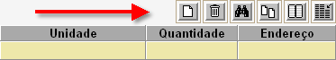
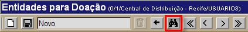

Saída por Doação/Empréstimo [ Voltar ]Utilize esta tela para realizar saídas de estoque via doação ou empréstimo. O formulário "Saída por Doação/Empréstimo" encontra-se dentro do menu "Outras Saídas".
Ao clicar no nome do formulário, o sistema abrirá a seguinte tela:
Este
manual contém os passos para exibe o passo-a-passo para as seguintes
funcionalidades: Realizar saída por Doação / Empréstimo1º Passo: informe os dados principais deste registro de doação. Os campos em amarelo são obrigatórios.
2° Passo: clique no botão  . Assim
que a doação é salva, uma grade para inclusão dos produtos da doação
será exibida na parte inferior da tela. . Assim
que a doação é salva, uma grade para inclusão dos produtos da doação
será exibida na parte inferior da tela.3° Passo: especifique os produtos e dados deste registro. No campo "Produto", informe o código do mesmo. Clique no campo e botão  [Procurar] para selecioná-lo a partir de uma
listagem de produtos cadastrados. No campo "Quantidade", informe a quantidade para o produto.
[Procurar] para selecioná-lo a partir de uma
listagem de produtos cadastrados. No campo "Quantidade", informe a quantidade para o produto. Pressione a tela "Enter" ou "Tab" para ir de um campo a outro. Você pode também utilizar os botões da grade para adicionar ou excluir linhas, pesquisar itens da grade, exportar os dados da grade para uma planilha Excel, etc.  Para especificar o endereço e lote de um produto, selecione a linha do mesmo. Os endereços de estoque correspondentes serão exibidos na parte inferior da tela (ver imagem abaixo).Selecione com um clique o endereço desejado. Repita isso para todos os itens da saída. 4° Passo: após inserir todos os produtos, clique no botão para salvar os dados registrados.5° Passo: se todos os dados estiverem corretos, clique em para concluir a doação. Após o processamento da saída, o botão  estará disponível para a visualização e impressão da Nota de Doação. estará disponível para a visualização e impressão da Nota de Doação. Consultar saídas existentesPara consultar registros de doação / empréstimo realizados anteriormente, siga os passos abaixo.1º Passo: clique no botão  para localizar o registro que deseja
abrir. para localizar o registro que deseja
abrir. 
A tela de consulta de registros de doação / empréstimo será exibida. Configure os filtros de pesquisa para facilitar a localização do registro desejado. Para mais informações sobre outros recursos e funcionalidades da pesquisa, favor ver o manual Introdução ao Sistema. Assim que localizar a saída que deseja consultar, selecione-a com um clique. |
 para fazer o
cadastro. Após inserir os dados da entidade, clique no botão
para fazer o
cadastro. Após inserir os dados da entidade, clique no botão  para voltar à tela
principal da doação.
para voltar à tela
principal da doação.